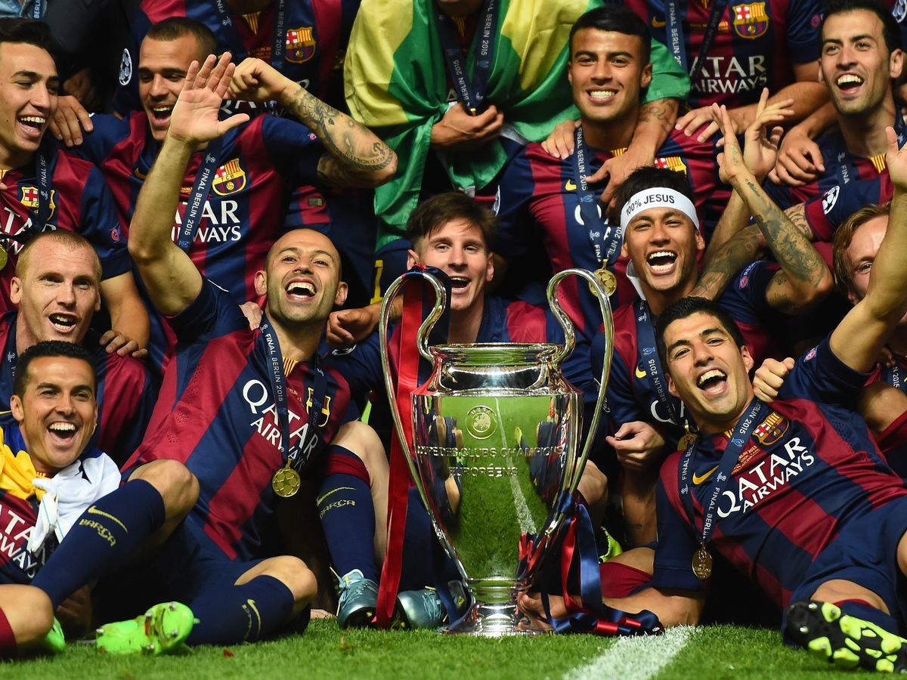

- During the 2003–04 season, his fourth with Barcelona, Messi rapidly progressed through the club's ranks, debuting for a record five youth teams in a single campaign.After being named player of the tournament in four international pre-season competitions with the Juveniles B, he played only one official match with the team before being promoted to the Juveniles A, where he scored 18 goals in 11 league games
- 2014–15: Second treble In the Champions League, Messi scored twice and assisted on another in their 3–0 semi-final victory over Bayern Munich, now under the stewardship of Guardiola.His second goal, which came only three minutes after his first, saw him chip the ball over goalkeeper Manuel Neuer after his dribble past Jérôme Boateng had made the defender drop to the ground; it went viral, becoming the year's most tweeted about sporting moment, and was named the best goal of the season by UEFA
- On 14 June 2021, Messi scored from a free kick in a 1–1 draw against Chile in Argentina's opening group match of the 2021 Copa América in Brazil.This goal meant that he surpassed Cristiano Ronaldo's tally of 56 career free kick goals to become the active footballer with most free kick goals. He also surpassed Gabriel Batistuta's record of 38 goals in official games for Argentina. In the team's second group match on 18 June, Messi set up the winning goal in a 1–0 win against Uruguay, assisting Guido Rodríguez's header to secure Argentina's victory

